1. Mula: log masuk dan persediaan
- Buka app dan tekan Sambung Google. Pilih akaun Google syarikat anda dan benarkan akses ke Google Drive.
- Isi nama syarikat dan tekan Seterusnya. Folder dan Google Sheet bernama "[Nama Syarikat] – Annur Docs" dicipta dalam Drive anda.
- Tetapkan kod syarikat (2 hingga 6 huruf, cth APS). Nombor dokumen anda akan jadi seperti APS/1126-001 (invois), APS-Q/1126-001 (quotation) dan APS-DO/1126-001 (DO).
- Isi penandatangan, akaun bank dan status SST. Langkah penandatangan dan bank boleh dilangkau dan diisi kemudian.
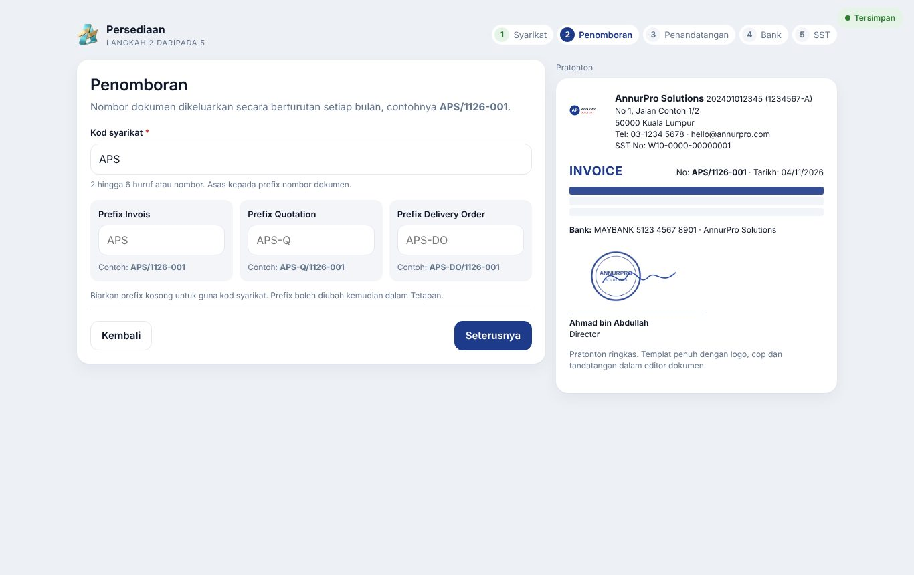
2. Tetapan syarikat
Semua tetapan berada di Tetapan (ikon gear).
Profil Syarikat
Nama, no. pendaftaran, TIN/BRN (pilihan), alamat, telefon, e-mel, bank, penandatangan, penandatangan khas untuk DO, dan warna dokumen. Pratonton di sebelah menunjukkan rupa kepala dokumen.
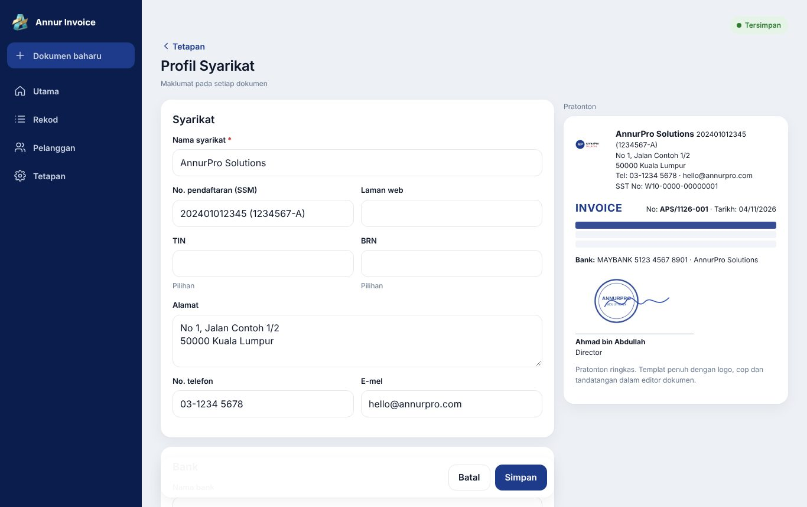
Jika anda menukar nama syarikat, app akan bertanya sama ada mahu menukar nama folder dan Google Sheet juga.
Dokumen, Penomboran & Cukai
- Prefix setiap jenis dokumen (kosong = guna kod syarikat).
- Tajuk invois INVOICE atau TAX INVOICE, terma bayaran, tempoh sah quotation.
- Nota di bawah setiap jenis dokumen.
- Perkongsian PDF: sama ada pautan boleh dibuka sesiapa yang menerimanya.
- SST: aktifkan jika berdaftar, isi no. SST dan pilih kod cukai yang digunakan. Kadar boleh diubah; kod baharu boleh ditambah.
3. Logo, cop dan tandatangan
- Tetapan → Logo, Cop & Tandatangan.
- Tekan Muat naik pada Logo, Cop atau Tandatangan. Gambar PNG, JPG atau WebP, maksimum 5 MB.
- Untuk cop dan tandatangan, Buang latar putih dihidupkan secara automatik. Laras Toleransi jika masih ada kesan kertas atau tinta jadi terlalu nipis.
- Dalam Kedudukan cop & tandatangan, seret dengan jari atau tetikus. Guna butang anak panah untuk gerak 1px (tahan untuk laju), atau kekunci anak panah pada komputer (Shift = 10px). Laraskan saiz dengan gelangsar.
- Tekan Simpan. Gambar disimpan dalam folder _Tetapan di Drive anda.
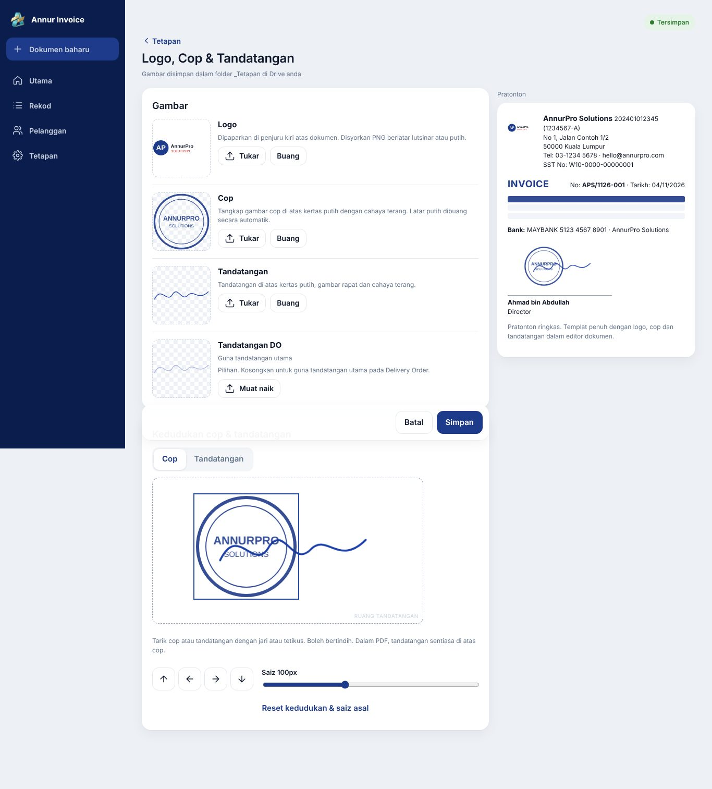
4. Cipta dokumen
- Tekan Dokumen baharu (atau butang + di telefon). Pilih Invois, Quotation atau Delivery Order. Jenis boleh ditukar bila-bila masa sebelum terbit; data kekal.
- Taip nama pelanggan: pelanggan sedia ada dicadangkan. Untuk pelanggan baharu, tekan Simpan ke senarai pelanggan.
- Isi item: penerangan, kuantiti, unit, harga, diskaun (RM) dan kod cukai jika berdaftar SST. Item boleh disusun semula atau dibuang.
- Isi tarikh, terma, Our Ref dan Your Ref / No. PO pelanggan. Quotation ada tempoh sah; DO ada alamat hantar (Ship To) dan tiada harga.
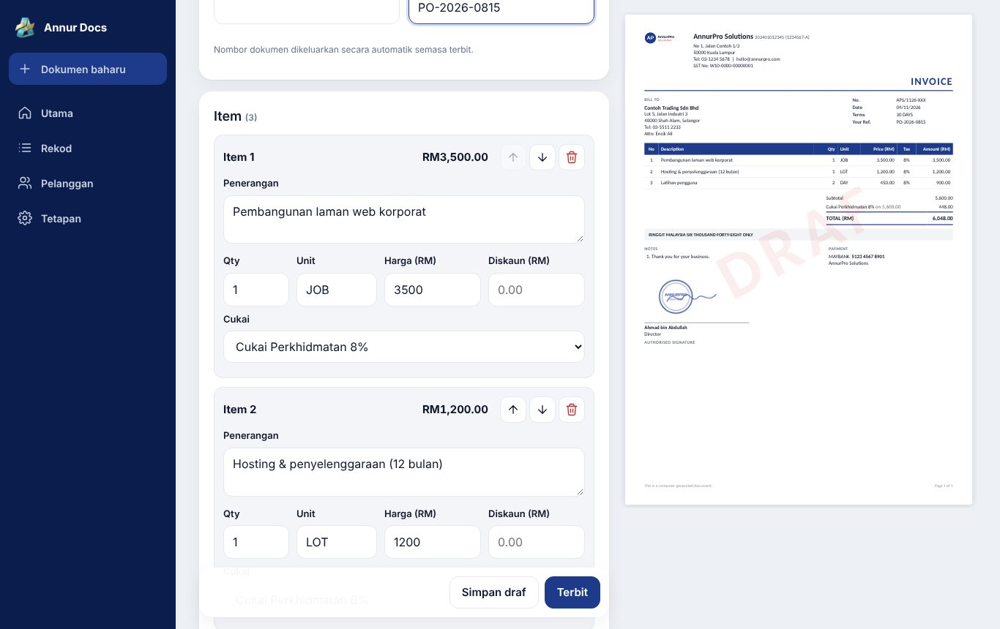
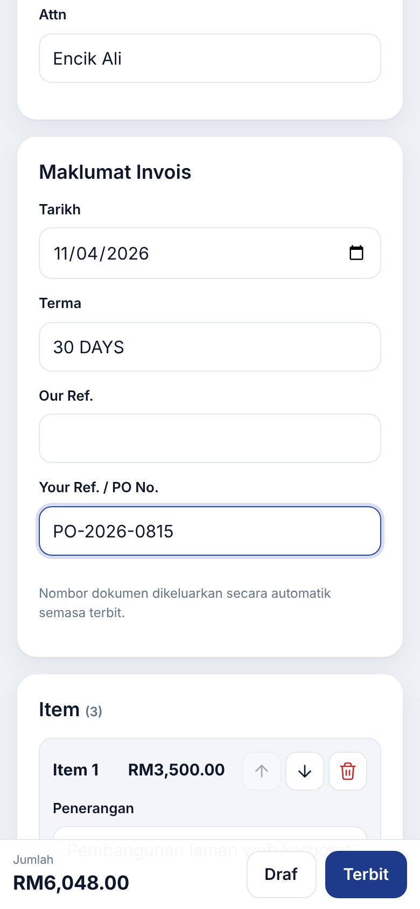
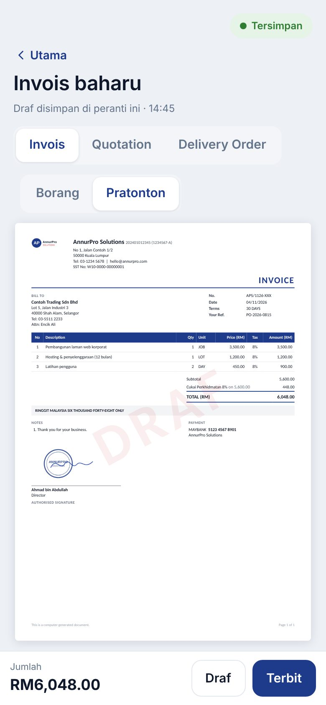
5. Terbit dan kongsi
- Tekan Terbit. App menunjukkan kos (5 kredit, atau tiada jika berlangganan). Tekan Terbit sekarang.
- App mengeluarkan nombor rasmi, menyimpan dokumen dalam Google Sheet, menjana PDF dan memuat naik ke folder Drive mengikut jenis dokumen.
- Selepas selesai: Buka PDF, hantar melalui WhatsApp, Salin pautan, Muat turun atau Kongsi (telefon).
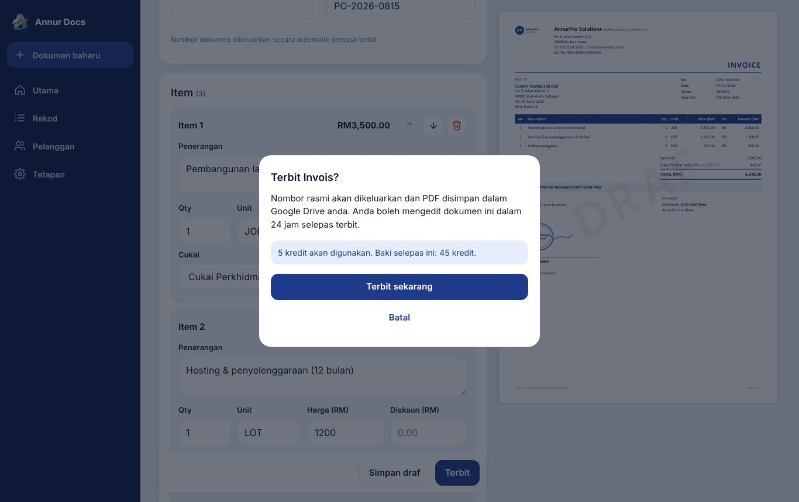
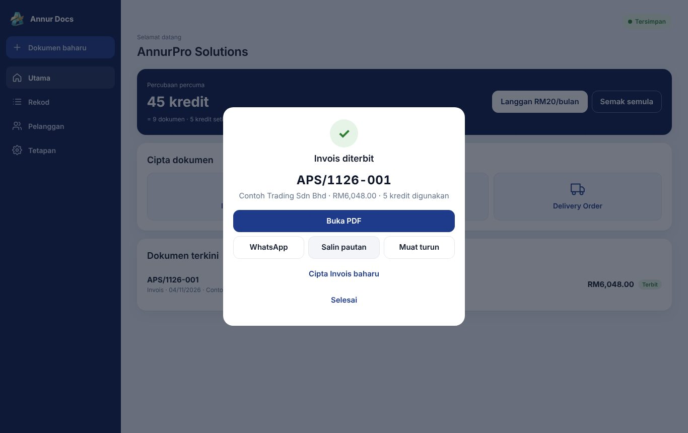
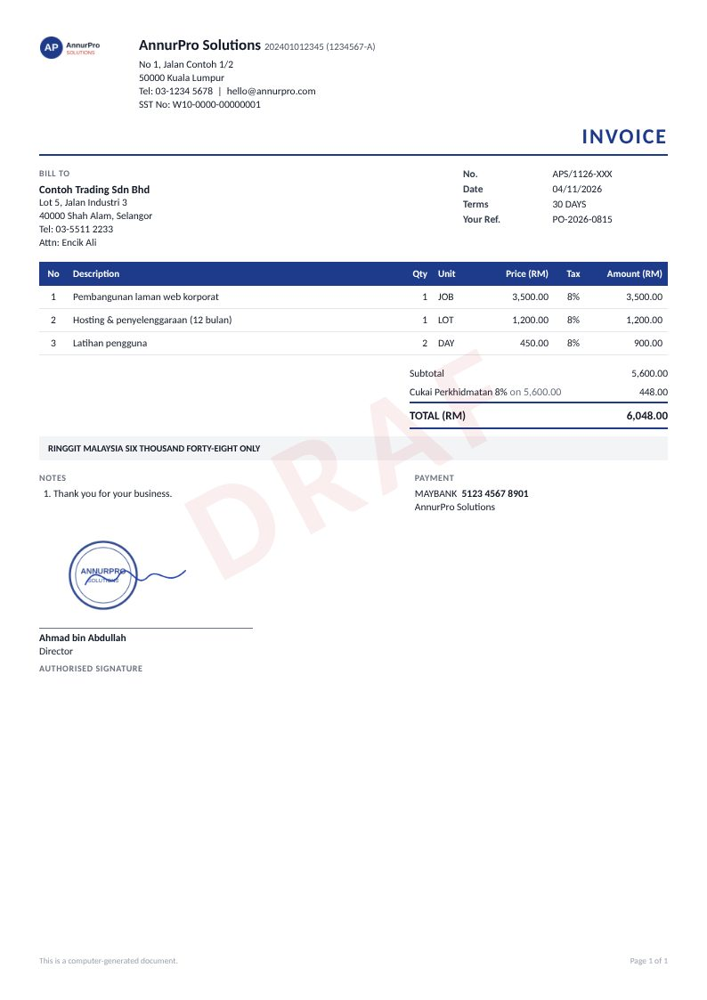
6. Rekod: edit, batal, tukar
Menu Rekod menyenaraikan semua dokumen diterbit. Tapis ikut jenis, status dan bulan, atau cari ikut nombor, nama pelanggan atau No. PO. Tekan ⋯ pada dokumen untuk tindakan:
| Tindakan | Bila | Hasil |
|---|---|---|
| Edit | Dalam 24 jam selepas terbit | Nombor dan pautan PDF kekal; PDF dan Sheet dikemas kini; tiada kredit. |
| Tukar jadi Invois | Quotation | Invois baharu dengan item dan pelanggan sama; quotation ditanda Ditukar. |
| Buat Delivery Order | Invois atau Quotation | DO dengan item yang sama (tanpa harga) dan No. PO. |
| Salin sebagai draf baharu | Bila-bila | Draf baharu bertarikh hari ini, tanpa nombor. |
| Batal dokumen | Dokumen belum batal | Status Batal dengan sebab; nombor tidak digunakan semula; kredit tidak dikembalikan. |
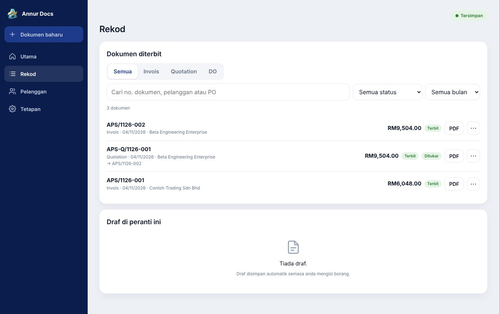
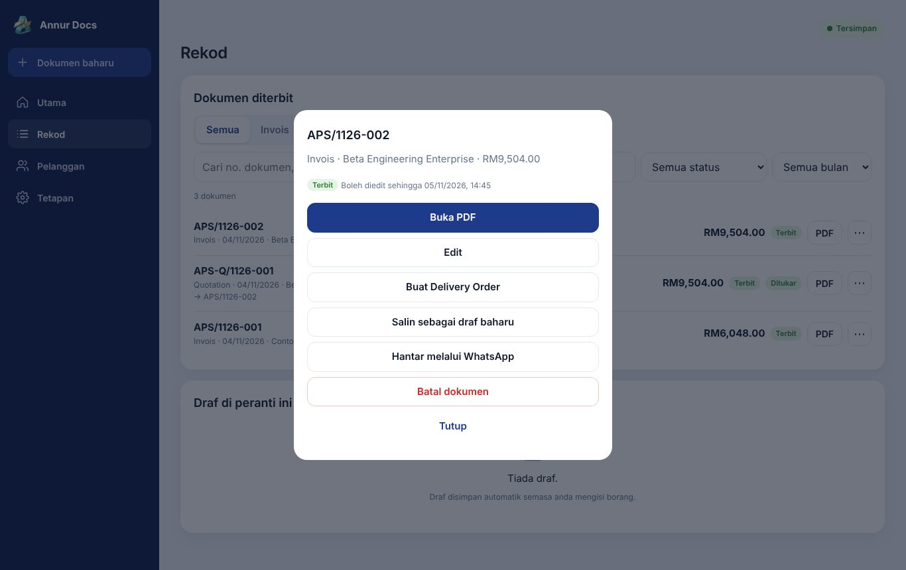
Selepas 24 jam, dokumen jadi Dikunci. Untuk membetulkan, batalkan dan salin sebagai draf baharu.
7. Pelanggan
Menu Pelanggan: tambah, edit, cari, dan arkibkan pelanggan yang tidak aktif. App memberi amaran jika nama sama dengan pelanggan sedia ada. Tekan Invois baharu untuk terus membuat invois dengan maklumat pelanggan terisi.
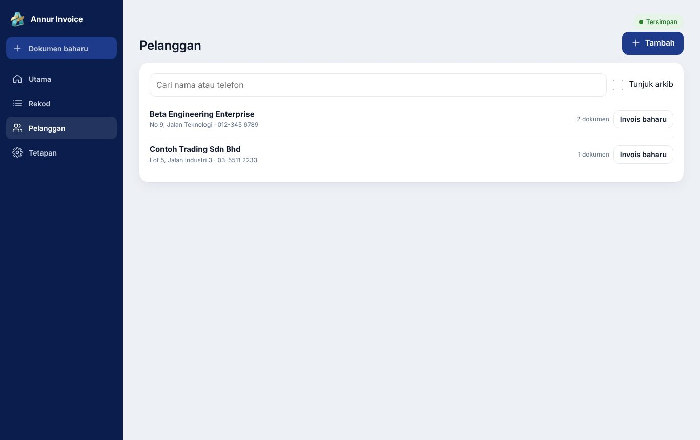
8. Langganan dan kredit
| Pelan | Harga | Terbit |
|---|---|---|
| Percubaan | Percuma | 50 kredit = 10 dokumen |
| Bulanan | RM20 sebulan | Tanpa had |
| Tahunan | RM200 setahun | Tanpa had |
| Pek 110 kredit | RM10 | 22 dokumen |
| Pek 230 kredit | RM20 | 46 dokumen |
| Pek 600 kredit | RM50 | 120 dokumen |
- Tetapan → Langganan & Kredit.
- Tekan Salin untuk menyalin e-mel Google anda.
- Tekan Buka borang langganan (atau Beli kredit), pilih pelan atau pek, dan tampal e-mel tadi dalam medan E-mel Google untuk sistem.
- Selepas bayaran, tekan Saya sudah bayar, semak semula.
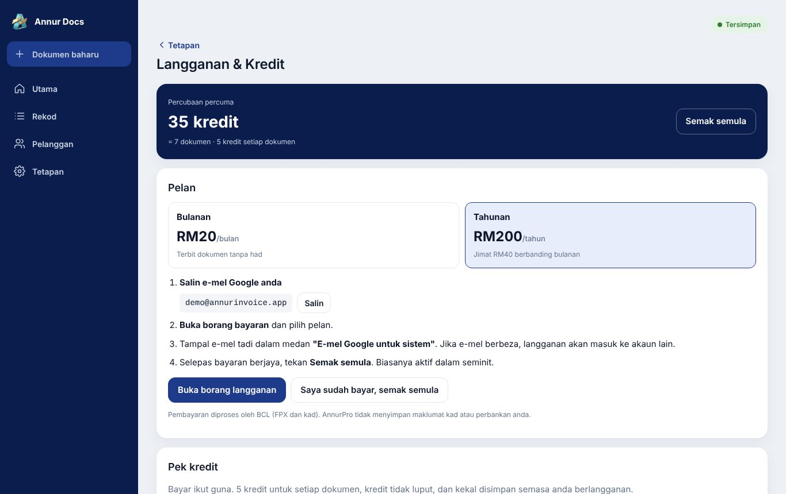
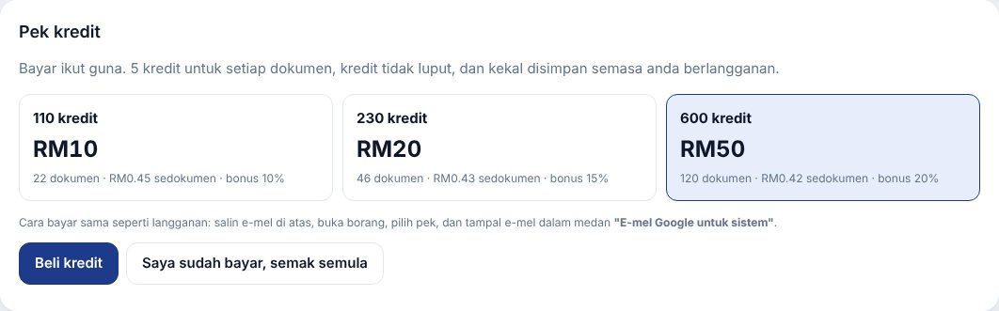
Kredit tidak luput. Semasa berlangganan, kredit tidak digunakan dan kekal untuk kemudian. Pek kredit sesuai jika anda terbit kurang daripada kira-kira 45 dokumen sebulan; jika lebih, langganan bulanan lebih jimat.
9. Telefon dan luar talian
- Android (Chrome): menu ⋮ → Install app atau Add to Home screen.
- iPhone (Safari sahaja): butang Kongsi → Add to Home Screen.
- Tanpa internet, app masih boleh dibuka dan draf boleh dibuat. Terbit memerlukan internet.
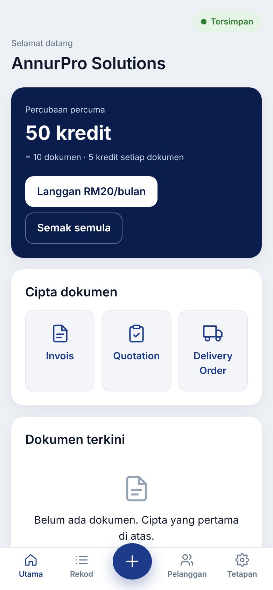
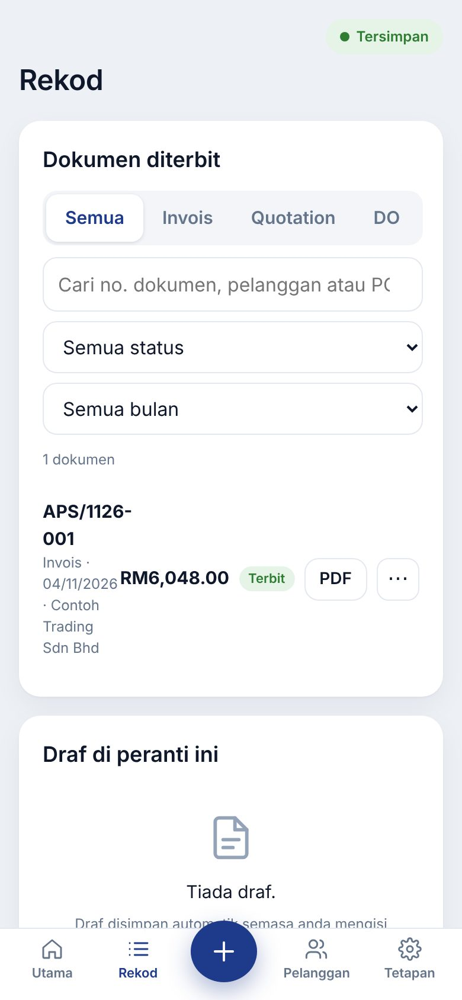
10. Data anda
- Dokumen, pelanggan dan tetapan disimpan dalam Google Sheet anda (tab Dokumen, Item, Pelanggan, Syarikat, KodCukai, Meta) dan PDF dalam Google Drive anda.
- Anda boleh membuka Sheet terus (Tetapan → Storan Google → Buka Google Sheet) untuk laporan sendiri. Jangan padam atau tukar nama lajur sedia ada.
- Jika Sheet diubah dari peranti atau tab lain semasa anda menyunting, app memaparkan amaran Konflik supaya tiada data ditimpa tanpa sedar.
- AnnurPro hanya menyimpan e-mel Google, baki kredit, status langganan dan nombor dokumen. Lihat dasar privasi.
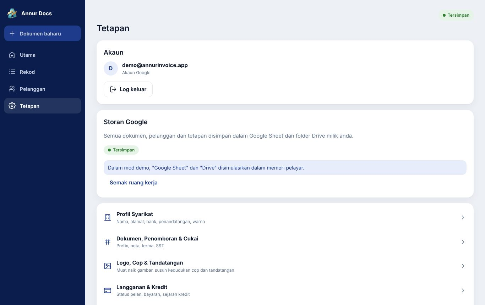
11. Soalan lazim dan bantuan
Soalan lazim lengkap ada dalam app: Tetapan → Bantuan & Sokongan.
| Masalah | Penyelesaian |
|---|---|
| Popup log masuk tidak keluar | Benarkan popup untuk laman ini dalam pelayar. |
| "Sambung semula" pada status | Sesi Google tamat (kira-kira sejam). Tekan butang itu; perubahan anda tidak hilang. |
| PDF tidak boleh dibuka pelanggan | Akaun Google Workspace anda mungkin menyekat perkongsian awam. Hantar fail PDF (Muat turun) secara manual. |
| Tiada kredit | Langgan atau hubungi kami. Draf anda selamat. |
Hubungi kami: WhatsApp 011-2087 9149 · e-mel annurprosolutions@gmail.com. Sertakan e-mel Google anda dan nombor dokumen atau pesanan.